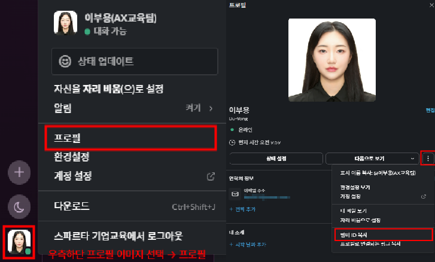
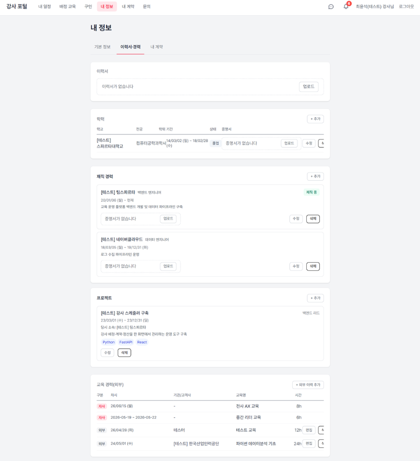
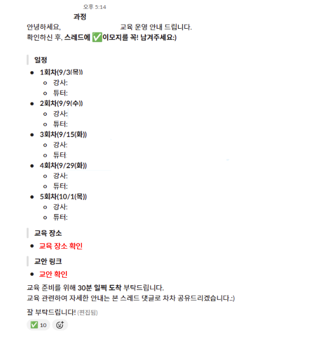
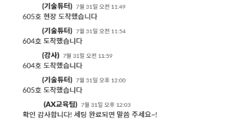
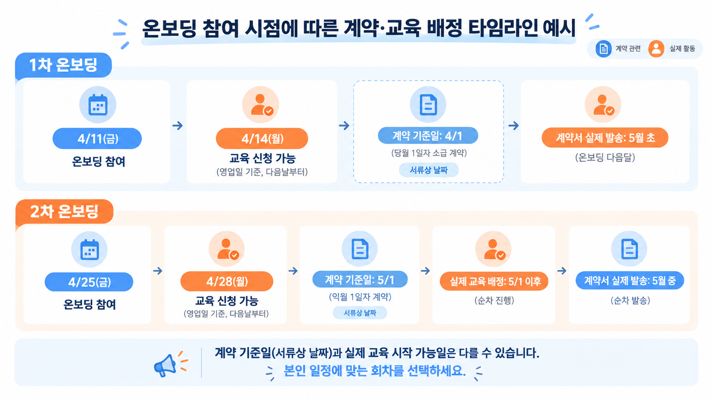

팀스파르타 AX교육팀 · 온보딩 v26.09.22
순서대로 따라오시면 됩니다. Slack과 강사 관리 플랫폼(교무실) 세팅부터 현장에서 지키셔야 할 것까지, 이 페이지에 정리되어 있습니다. 팀스파르타 기업교육은 높은 교육 만족도를 유지하고 있고, 그 기준은 매 현장에서 강사와 보조강사(기술튜터)가 함께 만듭니다.
온보딩에 참석하지 않으면 계약 체결과 교육 배정이 불가합니다.
신규 강사·보조강사(기술튜터) 온보딩은 매월 2주차·4주차 금요일 오후 3시(15:00~16:00), 온라인 ZOOM으로 진행됩니다. 일정상 참여가 어려우시면 다음 회차에 참여해 주세요.
교육 배정은 온보딩 참석과 Slack·플랫폼 세팅, 정산 정보 입력, 가능 일정 등록이 끝난 뒤 순차적으로 검토됩니다. 다만 참석이 곧바로 즉시 배정을 보장하지는 않습니다.
Slack의 역할별 공지 채널 알림은 항상 켜두셔야 합니다. 계약·발주·정산 마감·경비 신청 기한 등 활동에 직접 영향을 주는 중요한 안내가 모두 이 채널로 발송됩니다.
공지 채널에 안내된 내용과 이 온보딩 문서를 확인하지 않아 발생한 문제(정산 지연·누락, 신청 기한 경과, 배정 제외 등)에 대해서는 회사가 책임지지 않습니다. 문의 전에 공지와 문서를 먼저 확인해 주세요.
빠른 교육 배정을 원하시면 — 2주차 금요일(1차 온보딩). 세팅 완료 이후 배정이 순차 검토됩니다. 다만 계약 기준일이 당월 1일자로 소급 적용되고 계약서는 익월에 발송되어, 실제 배정 시작일과 다를 수 있습니다.
계약 기준일과 활동 시작 시점을 맞추고 싶으시면 — 4주차 금요일(2차 온보딩). 익월 1일자 계약 대상자로 분류되며, 배정도 원칙적으로 익월 1일 이후 순차 검토됩니다.
Step 1
01번부터 03번까지 순서대로 진행합니다. Slack과 강사 관리 플랫폼(교무실)이 비어 있으면 교육 공고 자체가 보이지 않고 계약·배정도 진행되지 않습니다. 각 항목을 펼쳐 확인하시고, 끝내지 못한 항목은 오늘 중으로 마무리해 주세요.
교육 공고와 운영 커뮤니케이션이 모두 Slack에서 이루어집니다. 채널에 들어가 있지 않으면 지원 기회 자체가 오지 않습니다.
역할별 공지 채널의 알림은 반드시 켜두세요. 계약서 발송 안내, 발주서 승인 요청, 정산·경비 신청 마감, 운영 기준 변경 등 놓치면 금전적·운영상 불이익으로 이어지는 정보가 이 채널로만 발송됩니다.
공지 채널 안내와 온보딩 문서를 읽지 않아 생긴 문제는 회사가 책임지지 않습니다.
플랫폼에 등록된 연락처와 가능 일정은 교육 제안·배정·긴급 연락에 사용되고, 계약서 발송과 강의료 지급도 이 정보를 기준으로 진행됩니다.

고객사는 강사 프로필을 보고 교육을 결정합니다. 여기에 입력된 내용이 곧 제안서에 들어가는 정보이고, 어떤 교육에 매칭될지를 결정합니다.

바로가기
온보딩을 진행하며 자주 열어보게 되는 링크를 모아두었습니다. 레벨·시급, 경비 금액 등 개별 조건에 해당하는 내용은 이 페이지에 공개하지 않으며, Slack 역할별 공지 채널에 안내된 문서 링크에서 확인해 주세요.
아래 항목은 개별 계약 조건에 해당하여 공개 페이지에 기재하지 않습니다.
Step 2
강사와 보조강사(기술튜터)는 상하 관계가 아니라 역할 분담입니다. 한 사람은 수업 전체의 흐름을 책임지고, 한 사람은 교육생 개개인의 실습을 책임집니다. 둘 중 하나라도 비면 만족도는 바로 떨어집니다.
보조강사는 단순한 보조 역할이 아닙니다. 교육생이 끝까지 실습 흐름을 따라가고 “나도 AI를 활용할 수 있겠다”는 경험을 하도록 돕는, 만족도를 직접 좌우하는 역할입니다.
각 단계를 펼쳐서 확인해 주세요.


이 탭은 온보딩에서 다룬 핵심만 모은 요약입니다. 실제 교육 운영의 기준은 플레이북입니다.
→ 보조강사(기술튜터) 플레이북 열기 ver 26.05
강사는 교육을 직접 설계하고 진행하는 교안 작성 주체이며, 수업 전체의 흐름과 시간을 운영합니다. 교육생이 오늘 무엇을 배웠고 내일 무엇을 할 수 있게 되었는지가 강사의 책임 범위입니다.
각 단계를 펼쳐서 확인해 주세요.
이 탭은 온보딩에서 다룬 핵심만 모은 요약입니다. 실제 교육 운영의 기준은 플레이북입니다.
→ 강사 플레이북 열기 ver 26.04
플랫폼에서 강사와 보조강사 자격을 동시에 보유할 수 있습니다. 배정되는 역할에 따라 위 두 탭의 내용을 각각 확인해 주세요.
겸임이시더라도 합류 후 첫 교육은 보조강사로 참여하시므로, 보조강사 플레이북을 먼저 확인해 주세요. 강사로 배정되신 회차에는 강사 플레이북을 함께 보시면 됩니다.
Step 3
파일럿 배정은 신규 합류자의 첫 교육 매칭 1회를 의미합니다. 첫 교육은 담당자가 직접 배정하며, 현장 운영 방식과 역할을 먼저 경험하는 단계입니다.
가장 많이 들어오는 질문입니다. 담당자가 등록된 일정을 보고 첫 1회를 배정하지만, 배정 건마다 개별로 연락을 드리지는 못합니다.
첫 배정 교육을 일정 변동으로 취소하시면, 다음에 지원하실 때 우선순위가 밀리는 패널티를 받을 수 있습니다.
플랫폼에는 실제로 가능한 일정만 등록해 주시고, 사정이 바뀌면 그때그때 직접 일정을 변경해 주세요.
교육 배정은 교육 수요·일정·지역·필요 역량·기존 경험·교육 유형·운영 상황 등을 종합적으로 고려해 진행됩니다. 특히 일부 월에는 임원 교육·PBL·심화 과정 등 특수 교육 비중이 높아 신규 합류자에게 바로 배정 가능한 일반 교육이 많지 않을 수 있습니다.
배정 가능성을 높이려면 플랫폼에 실제 참여 가능한 일정을 충분히 등록해 주세요.
신규로 합류하신 분은 아직 현장 경험이 없기 때문에, 첫 교육만큼은 회사가 안정적으로 운영해 온 기존 보조강사·강사와 매칭되도록 담당자가 직접 관리하고 있습니다.
다만 이 방식은 운영 리소스가 많이 들어, 2회차부터는 기술튜터풀 채널에서 직접 지원하시는 방식으로 진행됩니다.
강사로 참여하시는 경우: 시연 영상을 아직 제출하지 않으셨다면 첫 배정 전후 활동 초기에 제출해 주세요. 고객사에 전달되는 필수 자료입니다.
Step 4
계약서는 일정 기간의 기본 조건을 정하는 문서이고, 발주서는 교육 건별 세부 조건을 담아 발송·승인되는 문서입니다. 아래 기준은 2026년 10월 1일 계약분부터 적용됩니다.
강사·보조강사(기술튜터)에게 동일하게 적용됩니다.
| 항목 | 기준 |
|---|---|
| 온보딩 | 매월 2주차·4주차 금요일 15:00~16:00, 온라인 ZOOM ※ 미참석 시 계약 및 교육 배정 불가. 일정상 어려우시면 다음 회차에 참여 |
| 교육 투입·계약 체결 | 온보딩 참석 및 필수 세팅 완료 이후 가능 |
| 발주서 | 계약 이후 교육 진행 시, 강사 관리 플랫폼에서 교육 건별로 발송되며 본인이 직접 승인 |
| 레벨·시급 반영 시점 | 다음 계약 갱신 시점부터 반영 (계약 기간 중 즉시 변경되지 않음) 세부 기준·금액은 Slack 공지 채널에 안내된 역할별 문서 참고 |
| 계약 갱신 재검토 | 직전 분기 교육 참여 일자가 기준에 미달하는 경우, 해당 갱신 시점에 계약서가 발송되지 않을 수 있음 |
| 항목 | 강사 | 보조강사(기술튜터) |
|---|---|---|
| 계약 단위 | 6개월 | 3개월 |
| 계약 기준일 | 매년 1월 1일 · 7월 1일 | 분기별 1일자 |
| 신규 합류자 최초 계약 | 6개월 계약 (보조강사 → 강사 전환자는 3개월) | 3개월 계약 |
2026년 4분기 경과 규정 (강사 한정)
강사 계약 갱신 주기를 매년 1월·7월로 정렬하기 위해, 2026년 10월 1일자 계약은 3개월(10/1~12/31) 단위로 체결합니다. 이후 2027년 1월 1일자부터 6개월 단위로 전환되며, 해당 갱신의 승급 여부는 2026년 7월 1일~12월 31일 실적을 기준으로 판단해 2027년 1월 1일부터 적용됩니다.
보조강사(기술튜터)는 기존과 동일하게 3개월 단위로 운영됩니다.
| 구분 | 1차 온보딩 | 2차 온보딩 |
|---|---|---|
| 일정 | 매월 2주차 금요일 15:00 | 매월 4주차 금요일 15:00 |
| 계약 기준일 | 당월 1일자 소급 계약 (계약서는 익월 발송) | 익월 1일자 계약 |
| 교육 배정 | 온보딩 및 필수 세팅 완료 후 순차 진행 | 원칙적으로 익월 1일 이후 순차 진행 |
| 유의사항 | 빠른 배정이 가능하나, 계약 기준일과 실제 배정 시작일이 다를 수 있음 | 계약 기준일과 실제 활동 시작 시점을 맞추기 쉬움 |

| 대상 | 계약 기준일 |
|---|---|
| 기존 계약 갱신 대상자 | 갱신 기준일 |
| 월 1차 온보딩 참석자 | 당월 1일자 |
| 월 2차 온보딩 참석자 | 익월 1일자 |
| 갱신 재검토 대상자 | 해당 갱신 미진행 |
| 온보딩 미참석자 | 계약 및 교육 진행 불가 |
| 발주서 구분 | 처리 기준 |
|---|---|
| 교육 건별 발주 | 교육명·일자·시간·금액 등을 기재하여 발송, 플랫폼에서 본인이 승인 |
| 계약 기간 내 확정 교육 | 기존 계약 조건 기준으로 발주 |
| 계약서 발송 전 교육 투입 | 필요 시 건별 발주서로 우선 처리 가능 |
| 턴키 공고 교육 | 공고에 명시된 턴키 금액 기준으로 발주 (교통비·숙박비 포함) |
| 차수 추가·일정 신설 | 기존 교육과 연결된 건이라도 추가 발주서가 발송될 수 있음 |
| 구분 | 내용 |
|---|---|
| 대상 | 직전 분기 교육 참여 일자가 기준에 미달하여 해당 갱신이 진행되지 않는 경우 ※ 활동 종료 사유에 해당하는 경우는 별도 기준에 따라 처리 |
| 계속 활동 희망 의사 접수 | 계속 활동을 희망하시면 계약서 발송 완료 공지 이후 해당 월 말일까지 AX교육팀에 의사를 전달해 주세요. 접수된 건은 내부 검토를 거쳐 계약 진행 여부가 결정됩니다 |
| 이후 처리 | 말일까지 별도 의사 전달이 없으면 갱신 의사가 없는 것으로 보아 계정·권한 해지 절차가 순차 진행됩니다 |
| 확정 교육 처리 | 이미 발주된 교육은 위 절차와 무관하게 기존 조건대로 정상 진행되며 정산에도 변동이 없습니다 |
Step 5
아래는 실제 교육 이후 고객사와 운영진에게서 나온 피드백을 정리한 것입니다. 대부분 역량 문제가 아니라 미리 알았다면 피할 수 있었던 것들입니다.
강의 전달 — 이런 피드백이 있었습니다
“말씀이 다소 빠르고 목소리가 작아 내용을 따라가기 어려웠다”
“실습 시간에 전체 교육생을 살피기보다 가까이 있는 분들 중심으로 대응하는 모습이 아쉬웠다”
그래서 이렇게 해주세요
교안 전달 시점 — 이런 피드백이 있었습니다
“교안 전달이 늦어져, 보조강사가 충분히 숙지할 시간을 확보하지 못한 채 교육이 진행되었다”
그래서 이렇게 해주세요
보조강사 운영 — 이런 피드백이 있었습니다
“실습 시간 중 개인 노트북으로 자료를 확인하며 앉아 있는 시간이 일부 있었다. 실습 시간에는 교육생의 진행 상황을 더 적극적으로 살피고 지원하는 역할에 집중해 주었으면 한다”
그래서 이렇게 해주세요
비대면(Zoom) 교육 — 이런 피드백이 있었습니다
“여러 회사 교육생이 각자 노트북으로 참여하다 보니, 마이크·스피커 문제 등 강사가 통제하기 어려운 변수가 많았다. 사전 환경 체크가 하나의 준비 과정으로 있었다면 좋았을 것”
그래서 이렇게 해주세요
Step 6
교육 품질만큼 중요한 것이 함께 일하는 방식입니다. 아래는 처벌을 위한 기준이 아니라, 매 현장을 안정적으로 만들기 위한 공통 약속입니다.
사전 미팅, 자료 준비, 운영안 확인은 형식적인 절차가 아니라 현장에서 사고를 막는 장치입니다.
아웃보딩은 계약을 끝내기 위한 절차가 아니라, 확인된 사실을 짚고 개선을 합의하는 면담 절차입니다. 개선이 확인되면 정상 배정으로 돌아갑니다. 아래 표는 「강사·기술튜터 활동 제한 및 계약 해지 기준」 문서의 요약본입니다.
| 유형 | 시정 요청 | 해지·발주 중단 검토 |
|---|---|---|
| 교육 품질 | 교육 목표 미달, 협의 없는 커리큘럼 변경, 실습 지원 미이행 | 중대한 오류로 재실시 필요, 무관한 내용 지속 전달, 개선 요청 후 동일 문제 반복 |
| 교안·자료 | 납기 초과로 검수 불가, 검수 결과 미반영, 자료 오류 | 저작권 침해 자료 사용, 커리큘럼 불일치 교안 |
| 진행 방식 | 요구된 진행 방식 미준수, 현장 관리 미흡, 자료·장비·사전 과제 미준비, 요구사항·일정 조율 반복 미응답 | 폭언·차별·성희롱, 부적절한 신체 접촉, 교육생·담당자·타 강사 대상 모욕적 언행 |
| 일정 이행 | 개시시각 미준수, 통지 의무 불이행, 5영업일 이내 일방적 변경·취소 (각 누적 3회 이상 시 우측 전환) | 통지 없는 불이행, 확정 교육의 일방적 취소, 교육 시작 지연·컴플레인 발생 |
| 고객사 컴플레인 | 내용·진행·소통 관련 컴플레인 접수, 동일 유형 반복 | 고객사 신뢰의 중대한 훼손, 재계약·수주에 실질적 영향 |
| 보수·계약 정보 | 교육 현장에서 보수·계약 조건 언급으로 혼선 초래 | 타인 보수·계약 조건 무단 공개, 비공개 자료 무단 열람·전달, 정산 자료의 고객사·교육생 공유, 허위 정보로 갈등 유발 |
| 보안·개인정보 | 승인 없는 자료 취급 등 유출 없는 사안 | 개인정보 유출, 자료 무단 외부 공유·SNS 게시, 삭제 요청 불응, 허위 증빙 제출, 명예 훼손, 미협의 개인 영업·금전 거래 |
| 순서 | 내용 |
|---|---|
| 1 | 관련 자료와 사실관계를 확인합니다 |
| 2 | 필요한 경우 당사자에게 해당 내용을 안내하고 의견 제출 기회를 제공합니다 |
| 3 | 사안의 중대성, 반복 여부, 누적 이력 및 교육 운영에 미친 영향을 검토합니다 |
| 4 | 검토 결과에 따라 시정 요청, 서면 개선 요청, 일정 기간 발주 제한 또는 계약 해지 여부를 결정합니다 |
| 5 | 조치 결과와 적용 시점을 당사자에게 안내합니다 |
최근 교육 참여일 또는 협업 의사를 확인한 날로부터 3개월 동안 활동이 없으면 장기 미활동자로 분류될 수 있습니다. 이 경우 신규 교육 제안 대상에서 제외되고, 플랫폼 활동 상태가 비활성으로 바뀌며 Slack 채널에서도 퇴장 처리될 수 있습니다.
Step 7
| 공고 형태 | 지원 방법 |
|---|---|
| ‘지원하기’ 버튼이 있는 공고 | 버튼을 누르면 플랫폼에서 자동으로 지원 처리됩니다 |
| 매니저가 직접 올린 공고 (버튼 없음) | 스레드에 “지원합니다” 댓글을 반드시 작성해 주세요. 댓글이 있어야 배정이 가능합니다 |
지원 공고가 아니더라도, 플랫폼 월별 캘린더에 가능 일정을 체크해 두시면 그 일정에 맞는 교육을 먼저 제안드리기도 합니다.
플랫폼에 등록하신 사업자 유형에 따라 제출 서류와 접수 경로가 달라집니다. 전체 절차는 정산 절차 문서에 정리되어 있습니다.
절차는 두 단계입니다.
| 서류 | 형식 | 제출 주기 |
|---|---|---|
| 사업자등록증 | 최초 1회 | |
| 통장 사본 | PDF 또는 이미지 | 최초 1회 |
| 거래명세서 | 날인 후 PDF | 매번 |
| 세금계산서 | — | 매번 |
아래 항목은 개인 메시지가 아니라 폼과 Slack 워크플로로 접수해 주세요. DM으로 오면 누락되거나 접수 순서가 남지 않습니다.
경비는 개인이 아니라 교육 건에 부여됩니다. 동일 교육에 투입되면 역할·레벨과 무관하게 동일한 기준이 적용되며, 개인별 별도 협의는 진행하지 않습니다. 지역별 지원 금액과 세부 판정 기준은 이 페이지에 기재하지 않으며, Slack 공지 채널에 안내된 경비 문서에서 확인해 주세요.
| 단계 | 내용 |
|---|---|
| 1 · 사전 신청 | 교육 확정 후 교육일 전까지 Slack 워크플로로 제출 — 네이버 지도 기준 출발지(역) → 도착지 대중교통 경로·비용 캡처 첨부 |
| 2 · 사후 증빙 | 본인이 투입한 마지막 교육일 기준 7일 이내 Slack 워크플로로 제출 — 도착역 → 교육 장소 택시 실비 영수증 ※ 교육 전체 종료일이 아니라 본인의 투입 종료일 기준 |
| 3 · 승인 및 지급 | AX교육팀 확인 후 산정 금액 안내 및 지급 |
① 사전 신청 → ② AX교육팀 확인 → ③ 교육 진행 → ④ 사후 증빙 제출 순서를 반드시 지켜 주세요.
사전 신청 없이 사후에만 제출하시거나, 사전 신청만 하고 사후 증빙을 제출하지 않으시면 실비 지급이 어렵습니다. 사전 신청 시 제출한 경로가 조회 조건·판정 기준을 충족하지 않는 경우에도 사후 정산이 불가할 수 있습니다.
조회 조건을 임의로 변경한 캡처, 실제와 다른 출발지·경로 제출, 미탑승 구간 청구가 확인되면 해당 건 경비는 지급되지 않고 기지급액은 회수되며, 반복 시 활동 제한 기준에 따라 처리됩니다.
참고
배정받게 될 교육은 크게 아래 네 가지로 나뉩니다. 유형마다 대상과 난이도, 준비해야 할 것이 다릅니다.
FAQ
온보딩 이후 실제로 반복해서 들어온 질문들입니다.
팀스파르타 기업교육은 강사와 보조강사가 한 팀으로 움직이고, 현장마다 고객사 성격·교육생 수준·실습 환경이 모두 다릅니다. 처음부터 단독 강사로 배정되면 그 변수를 혼자 감당하셔야 하고, 특히 장기 교육은 중도 교체가 어려워 고객사와 교육생 모두에게 부담이 큽니다.
그래서 신규 합류자는 첫 교육 1회를 기존 인력과 페어로 들어가 운영 흐름·교안 활용·역할 분담을 먼저 보시게 됩니다. 자세한 내용은 Step 3을 확인해 주세요.
네, 필수입니다. 계약서 발송 안내, 발주서 승인 요청, 정산·경비 신청 마감, 운영 기준 변경 등 활동에 직접 영향을 주는 정보가 역할별 공지 채널로만 발송됩니다.
공지 채널에 안내된 내용과 온보딩 문서를 읽지 않아 발생한 문제(정산 지연·누락, 신청 기한 경과, 배정 제외 등)에 대해서는 회사가 책임지지 않습니다.
아닙니다. 플랫폼의 동의 체크는 이용과 정보 활용에 대한 확인일 뿐, 계약으로서의 효력은 없습니다.
실제 계약은 계약서와 교육 건별 발주서로 진행됩니다. 계약서는 별도로 발송되고, 발주서는 플랫폼에서 건마다 직접 승인하시게 됩니다. 자세한 내용은 Step 4를 확인해 주세요.
강사는 6개월 단위(매년 1월 1일·7월 1일 기준일), 보조강사(기술튜터)는 3개월 단위(분기별 1일자)로 계약이 진행됩니다.
다만 강사의 경우 갱신 주기를 1월·7월로 정렬하기 위해 2026년 10월 1일자 계약만 3개월(10/1~12/31)로 체결되고, 2027년 1월 1일부터 6개월 단위로 전환됩니다.
계약서 발송 일정과 세부 기간은 대상자별로 별도 안내됩니다.
레벨 체계와 레벨별 시급, 승급·유지 기준은 개별 계약 조건에 해당해 이 공개 페이지에는 기재하지 않습니다.
Slack 역할별 공지 채널에 안내된 레벨·시급 기준 문서에서 확인해 주세요. 본인의 현재 레벨은 강사 관리 플랫폼 내 자격 메뉴에서 확인하실 수 있습니다.
참고로 레벨 변경에 따른 시급은 다음 계약 갱신 시점부터 반영되며, 교육 건별 시급 협상은 진행하지 않습니다.
아닙니다. 시급은 교육 계약을 맺은 시점의 레벨을 기준으로 정해집니다. 한번 계약을 맺으면 그 교육을 실제로 진행하는 날짜가 나중이더라도 계약 당시 조건 그대로 적용됩니다.
즉 기준은 “교육하는 날”이나 “정산받는 날”이 아니라 “계약을 맺은 날”입니다. 세부 기준은 역할별 안내 문서를 확인해 주세요.
아닙니다. 온보딩 참석과 필수 세팅(Slack·플랫폼·정산 정보·가능 일정)을 마치면 배정 대상자로 검토됩니다.
배정은 교육 수요·일정·지역·필요 역량·기존 경험·교육 유형·운영 상황 등을 종합적으로 고려해 진행되므로, 참석 직후 즉시 배정이 보장되지는 않습니다.
1차(2주차 금요일)는 빠른 배정을 원하시는 분께 권합니다. 계약 기준일이 당월 1일자로 소급 적용되고 계약서는 익월에 발송되어, 실제 배정 시작일과 다를 수 있습니다.
2차(4주차 금요일)는 계약 기준일과 실제 활동 시작 시점을 맞추고 싶은 분께 권합니다. 익월 1일자 계약 대상자로 분류되고, 배정도 익월 1일 이후 순차 검토됩니다.
두 회차 모두 오후 3시, 온라인 ZOOM으로 진행됩니다.
계약서는 일괄이 아닌 순차 발송됩니다. 발송 기간 중에는 개별 문의를 주시지 않아도 되며, 최종 발송이 완료되면 공지 채널에 완료 공지가 올라옵니다.
완료 공지 이후에도 수신되지 않았다면, 직전 분기 교육 참여 일자가 기준에 미달해 갱신이 진행되지 않은 경우일 수 있습니다. 계속 활동을 희망하시면 해당 월 말일까지 AX교육팀에 의사를 전달해 주세요. 자세한 내용은 Step 4를 확인해 주세요.
제약 없습니다. 용역 계약이고 정규 고용이 아니기 때문에 타 기관·타 기업 강의 활동은 자유롭습니다.
다만 교육 배정은 일정 확보가 전제이므로, 확정된 교육과 일정이 겹치는 상황만 피하면 됩니다. 플랫폼 일정을 최신 상태로 유지해 주시는 것이 가장 확실한 방법입니다.
백지에서 시작하지 않습니다. 교육별 커리큘럼이 제공되고, 그 위에 실습과 예시를 붙여 완성하시게 됩니다.
작성 도구는 Notion입니다. 제출 기한과 준비 순서는 Step 2 강사 탭 · 교안 제작에 정리되어 있습니다.
지역별 정액으로 받으실 경우 별도 신청이 필요 없습니다. 대중교통 접근이 어려운 지역으로 실비 산정을 원하시면 교육일 전까지 Slack 워크플로로 사전 신청하시고, 본인 투입 마지막 교육일 기준 7일 이내에 사후 증빙까지 제출하셔야 합니다.
정액과 실비는 중복 지급되지 않습니다. 지역별 지원 금액과 판정 기준은 Slack 공지 채널에 안내된 경비 문서에서 확인해 주세요. 절차는 Step 7 · 업무 경비에 정리되어 있습니다.
개인 DM이 아니라 Slack 워크플로로 접수해 주세요. 사업자 강의료 증빙 제출, 경력증명서 발급 신청, 계약서 발송 요청, 업무 경비 사전 신청이 대상입니다.
개인(프리랜서)은 별도 제출 서류 없이 플랫폼 등록만으로 명세서에 자동 반영됩니다.
개인 강사·보조강사는 강사 포털 명세서 기준으로 매월 10일 정산됩니다. 명세 내용을 확인 후 이의가 있으면 익월 2일 자정까지 포털 문의 게시판으로 접수해 주세요.
이 기한을 넘기면 해당 회차 정산이 마감되어 다음 회차로 넘어갑니다. 교육명·강의 일자·수정이 필요한 항목·실제 진행 내역·증빙을 함께 적어주시면 빠르게 확인됩니다.
1차는 현장에서 강사와 보조강사가 협의해 처리합니다. 계정 이슈나 업로드 오류 같은 기술 문제는 대부분 여기서 해결됩니다.
해결되지 않으면 담당 매니저에게 바로 연락하시면 됩니다. 연락 경로는 Step 7 · 문의는 어디로에서 확인해 주세요.
다음 온보딩에 반드시 참석해 주셔야 계약 체결과 교육 배정이 시작됩니다.
플랫폼 등록과 자격 확인, 계약·정산 절차, 현장 운영 기준이 온보딩에서 함께 정리되기 때문에, 건너뛰면 첫 현장에서 혼선이 생기고 배정도 진행되지 않습니다. 다음 회차 일정은 Slack 공지 채널로 안내드립니다.
최근 교육 참여일 또는 협업 의사를 확인한 날로부터 3개월간 활동이 없으면 장기 미활동으로 분류될 수 있습니다. 이 경우 신규 교육 제안 대상에서 제외되고, 플랫폼 활동 상태가 비활성으로 바뀌며 Slack 채널에서도 퇴장 처리될 수 있습니다.
다만 회사가 교육을 제안하지 않아 활동이 없었던 경우는 해당하지 않으며, 처리 전에 협업 의사를 먼저 확인드립니다.
휴직·질병·출산육아·장기 출장·학업 등 불가피한 사유를 미리 공유해 주시면 해당 기간은 산정에서 제외됩니다. 이후 다시 활동을 원하실 때는 AX교육팀(axedu@teamsparta.co)으로 재등록을 요청하실 수 있습니다.